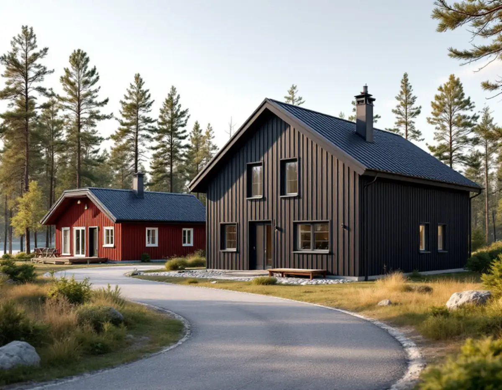

Planläget
Vi tar reda på om området är under planläggning, har anstånd eller väntar på genomförandetiden.
Haninge har många fritidshusområden där allt fler bor året runt, och kommunen planlägger dem för permanentboende. För den som vill bygga nytt eller bygga ut betyder det att tidpunkten styrs av detaljplanen och av när gator och vatten och avlopp är klara. Geal Entreprenad AB bygger i Haninge som total entreprenad och hjälper dig att planera projektet efter kommunens tidsplan.

Haninge kommun kallar de fritidshusområden som ska anpassas för permanentboende för omvandlingsområden. Fler som bor året runt innebär enligt kommunen ökade krav på service, större byggrätter, bättre gator och belysning, bra dricksvatten och bättre rening av avloppsvatten. Processen tar avstamp i kommunens VA-plan och pågår ofta under många år.
Först tas en detaljplan fram, sedan bygger kommunen ut vatten, avlopp och gator, och därefter ansluter varje fastighet. Detaljplanen bestämmer var man får bygga och kan också styra hur fastigheter delas och hur husen placeras och utformas. Medan planen tas fram brukar beslut om bygglov skjutas upp, så kallat anstånd, för att underlätta planarbetet.
Du har rätt att lämna synpunkter vid samrådet och granskningen, och kommunen håller i regel också startmöten när planarbetet börjar. Det är ett bra tillfälle att ta upp vad du vill kunna bygga på tomten i framtiden.
När detaljplanen har vunnit laga kraft används ofta en förskjuten genomförandetid. Kommunen skriver att det inte går att få bygglov innan genomförandetiden börjar, för att undvika krockar mellan privata husleveranser och kommunens utbyggnad. Därefter beviljas bygglov enligt den nya planen.
Under utbyggnaden kan det enligt kommunen bli buller, damm, tillfälliga upplag och begränsad framkomlighet när gatorna grävs upp, och finns det mycket berg kan det behöva sprängas. Då görs alltid en riskanalys och vibrationsmätare sätts upp på några byggnader. Varje fastighet får en förbindelsepunkt för vatten och avlopp, och ett frischaktsavtal ger kommunen rätt att schakta på tomten för att skydda anslutningspunkten.
För oss betyder det att projekteringen kan göras i god tid, medan själva bygget planeras till när gator och ledningar är färdiga. Ritningar, kostnadsförslag och val av material kan alltså vara klara när genomförandetiden börjar, så att ansökan om bygglov kan lämnas in direkt.
När den kommunala utbyggnaden är klar kan du börja dra ledningar och bygga på din egen fastighet. Haninge kommun påpekar att du måste söka bygglov innan du bygger till, bygger nytt eller gör markarbeten, och att anslutningen och ledningsdragningen från förbindelsepunkten till huset kräver anmälan. Ledningarna på tomten bekostar du själv.
Kommunen ger också rådet att välja husleverantör med omsorg, eftersom alla hus inte uppfyller planens bestämmelser om utformning och placering. Det är här ett byggföretag som utgår från planbestämmelserna gör nytta: vi ritar och bygger efter det som planen tillåter på din tomt, i stället för att anpassa planen efter ett färdigt hus. Läs mer om nybyggnad av villa och tillbyggnad.
Medger detaljplanen att fastigheten delas ansöker du om avstyckning hos Lantmäteriet, och den förrättningen bekostar fastighetsägaren.
Boverket rekommenderar att alltid göra ett skriftligt avtal när du anlitar hantverkare, och konstaterar att det enklaste juridiskt är att köpa allt från ett och samma företag. I avtalet bör det stå vem som ansvarar för vad, vilka material som ska användas och vem som tätar och återställer efter håltagning. Köper du själv in material till entreprenören är du enligt Boverket ansvarig för produktens funktion.
Hos oss får du ett skriftligt kostnadsförslag och avtal, och vi samordnar alla hantverkare och behöriga installatörer för el och VVS. Gäller projektet ett befintligt fritidshus som ska byggas om, se också köksrenovering i Haninge.
Vi tar reda på om området är under planläggning, har anstånd eller väntar på genomförandetiden.
Tomt, berg, befintligt hus och förbindelsepunkten för VA gås igenom.
Huset eller tillbyggnaden ritas efter planbestämmelserna.
Ett skriftligt förslag och avtal med tydlig ansvarsfördelning.
Ansökan om bygglov och anmälan för VA-anslutningen.
Vi samordnar bygget och går igenom resultatet med dig.
Rotavdraget är 30 procent av arbetskostnaden, högst 50 000 kronor per person och år och högst 75 000 kronor ihop med rutavdrag. Avdraget gäller även fritidshus som du äger och använder.
Ett helt nytt hus ger aldrig rotavdrag, och inte heller att riva ett gammalt hus, även om det nya byggs på samma stomme. En tillbyggnad på ett befintligt hus kan ge avdrag om den sitter ihop med ytterväggen till minst 75 procent av någon sida eller har en dörr in till huset. Vi drar avdraget direkt på fakturan där det gäller.
Om det är ett nytt hus, en ombyggnad av ett fritidshus eller en tillbyggnad, hur tomten ser ut med berg och höjdskillnader, hur långt det är till förbindelsepunkten och vad planbestämmelserna säger om utformningen. Platsbesöket är gratis och du får ett skriftligt kostnadsförslag.
Total entreprenad för villan.
Byggfirma →Takbyte, takbesiktning och plåtarbeten.
Takläggare i Haninge →Dalarö, Vendelsö och Brandbergen.
Takrenovering i Haninge →Vakuumtoalett, sluten tank och öarna.
Badrumsrenovering i Haninge →Tegelvillor, grupphus och panelade gårdar.
Fasadrenovering i Haninge →Sportstugor och fönster i skärgårdsväder.
Fönsterbyte i Haninge →Egnahem, sportstugor och hus i sluttning.
Golvläggare i Haninge →Egnahem, grupphus och Dalarö.
Köksrenovering i Haninge →Egnahem, grupphus och sommarvillor i Haninge.
Målare i Haninge →Falsad plåt, sjöbodar och beslag i Haninge.
Plåtslagare i Haninge →Verandor, altaner och skärmtak.
Snickare i Haninge →